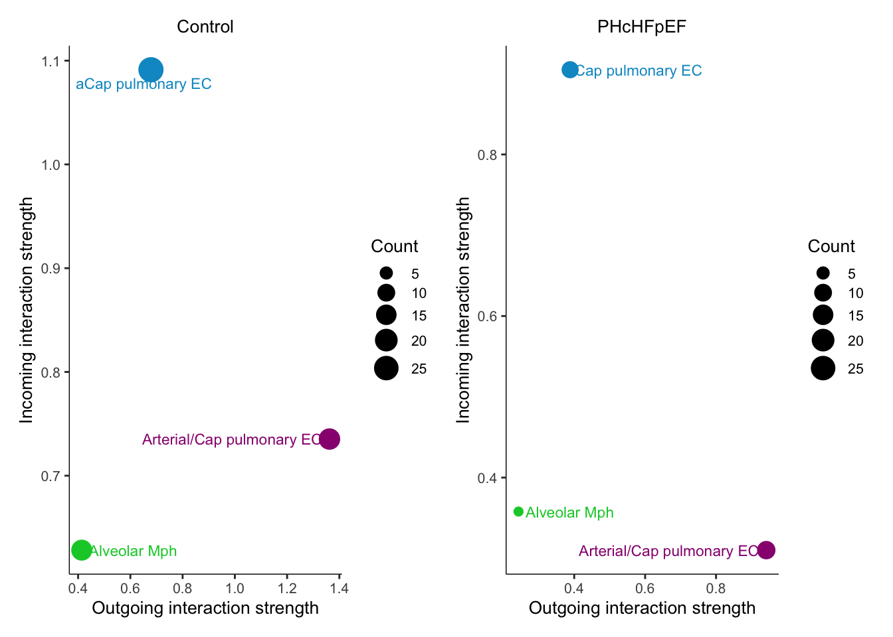
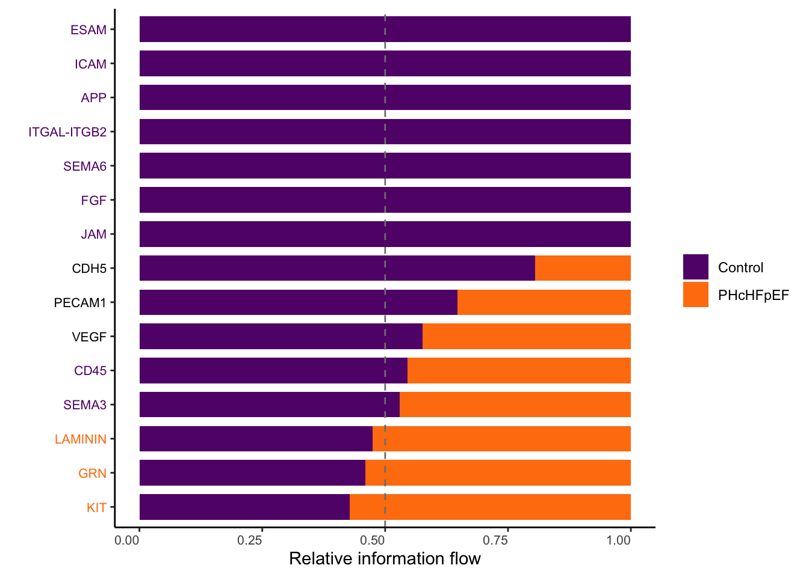
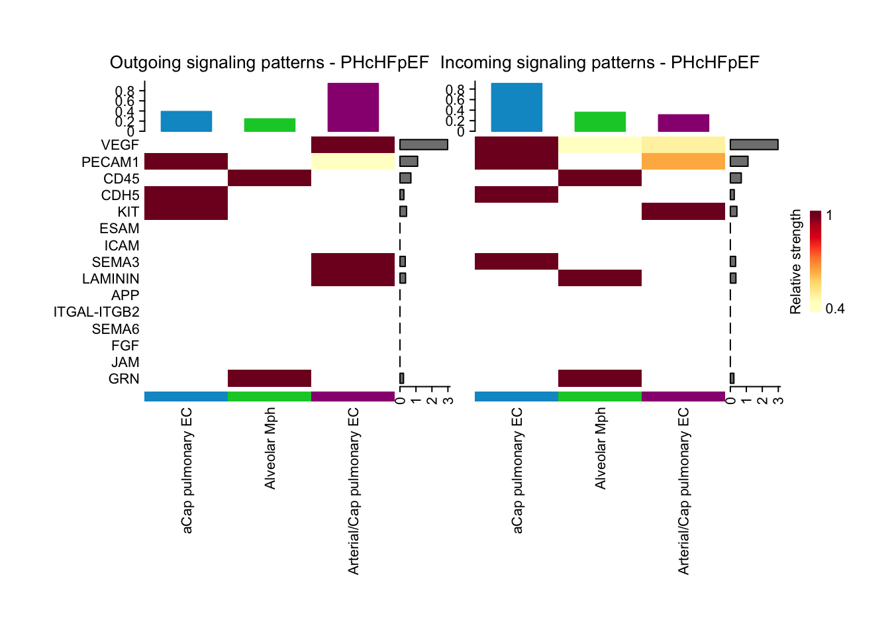

Alveolar Macrophages - Endothelial Cells Interactome analysis
Iliana Papadopoulou
2025-05-11
Last updated: 2025-05-11
Checks: 7 0
Knit directory:
Alveolar_Mph_mouse_lung_PH/
This reproducible R Markdown analysis was created with workflowr (version 1.7.1). The Checks tab describes the reproducibility checks that were applied when the results were created. The Past versions tab lists the development history.
Great! Since the R Markdown file has been committed to the Git repository, you know the exact version of the code that produced these results.
Great job! The global environment was empty. Objects defined in the global environment can affect the analysis in your R Markdown file in unknown ways. For reproduciblity it’s best to always run the code in an empty environment.
The command set.seed(20250507) was run prior to running
the code in the R Markdown file. Setting a seed ensures that any results
that rely on randomness, e.g. subsampling or permutations, are
reproducible.
Great job! Recording the operating system, R version, and package versions is critical for reproducibility.
Nice! There were no cached chunks for this analysis, so you can be confident that you successfully produced the results during this run.
Great job! Using relative paths to the files within your workflowr project makes it easier to run your code on other machines.
Great! You are using Git for version control. Tracking code development and connecting the code version to the results is critical for reproducibility.
The results in this page were generated with repository version 93630a7. See the Past versions tab to see a history of the changes made to the R Markdown and HTML files.
Note that you need to be careful to ensure that all relevant files for
the analysis have been committed to Git prior to generating the results
(you can use wflow_publish or
wflow_git_commit). workflowr only checks the R Markdown
file, but you know if there are other scripts or data files that it
depends on. Below is the status of the Git repository when the results
were generated:
Ignored files:
Ignored: .DS_Store
Ignored: data/Output/
Unstaged changes:
Modified: analysis/Alveolar_Macrophages_GSEA.Rmd
Modified: analysis/Alveolar_Mph_analysis.Rmd
Modified: analysis/MuLung_snRNAseq_analysis.Rmd
Modified: analysis/MuLung_snRNAseq_preprocessing.Rmd
Modified: analysis/about.Rmd
Modified: analysis/index.Rmd
Modified: analysis/license.Rmd
Note that any generated files, e.g. HTML, png, CSS, etc., are not included in this status report because it is ok for generated content to have uncommitted changes.
These are the previous versions of the repository in which changes were
made to the R Markdown
(analysis/Alveolar_Mph_EC_Interactome_analysis.Rmd) and
HTML (docs/Alveolar_Mph_EC_Interactome_analysis.html)
files. If you’ve configured a remote Git repository (see
?wflow_git_remote), click on the hyperlinks in the table
below to view the files as they were in that past version.
| File | Version | Author | Date | Message |
|---|---|---|---|---|
| Rmd | 93630a7 | iliana-pap | 2025-05-11 | Interactome analysis Alveolar Mph and EC |
Load packages
suppressPackageStartupMessages({
library(plyr)
library(patchwork)
library(Seurat)
library(stringr)
library(dplyr)
library(tidyverse)
library(here)
library(openxlsx)
library(zeallot)
library(ggsci)
library(openxlsx)
library(pheatmap)
library(stringr)
library(viridis)
library(scCustomize)
library(stringr)
library(gridExtra)
library(grid)
library(CellChat)
library(ComplexHeatmap)
})5. Interactome analysis among alveolar macrophages and endothelial cells in control vs PH-cHFpEF mice
Set directory
basedir <- here()
source(paste0(basedir,'/analysis/Lung_snRNAseq_functions.R'), echo=FALSE)
source(paste0(basedir,'/analysis/Cellchat_fun.R'), echo=FALSE)
# Create directory to save the analysis outcome
# Create directory to save preprocessed seurat objects
output_obj_dir <- paste0(basedir,"/data/Output/")
dir.create(output_obj_dir)Read seurat annotated object
LungMu_obj <- readRDS(file= paste0(output_obj_dir, "340821_Mu_Lung_snRNAseq_merged_annotated.rds" ))Define color palette
colCond <- c("#631879FF","#FF7F0EFF")
names(colCond) <- unique(LungMu_obj$condition)If object contains ensemble in gene name, remove it
#Convert to SingleCellExperimentObject for changing the rownames without change the reductions
LungMu_obj.sce <- as.SingleCellExperiment(LungMu_obj, assay = "RNA")
gene_name_fixdf <- data.frame(Gene_Name = rownames(LungMu_obj.sce))
gene_name_fixdf$Symbol <- gsub("^[^.]*.","", gene_name_fixdf$Gene_Name)
# Check duplicates in df and fix them
duplidx <- rownames((gene_name_fixdf[duplicated(gene_name_fixdf$Symbol), ]))
Fixed_dupl <- gene_name_fixdf %>%
filter(row_number() %in% duplidx) %>%
mutate(Symbol = paste0(Symbol, ".1"))
gene_name_fixdf[duplidx,"Symbol"] <- Fixed_dupl$Symbol
# Check again for double duplicates
duplidx <- rownames((gene_name_fixdf[duplicated(gene_name_fixdf$Symbol), ]))
Fixed_dupl <- gene_name_fixdf %>%
filter(row_number() %in% duplidx) %>%
mutate(Symbol = paste0(Symbol, ".2"))
gene_name_fixdf[duplidx,"Symbol"] <- Fixed_dupl$Symbol
rownames(LungMu_obj.sce) <- gene_name_fixdf$Symbol
# Convert SingleCell experiment object back to seurat object by retaining the reductions, normalization, etc
LungMu_obj <- as.Seurat(LungMu_obj.sce, assay = NULL)Select alveolar macrophages and endothelial cells
celltypes_involved <- c("aCap pulmonary EC", "Arterial/Cap pulmonary EC", "Alveolar Mph")
LungMu_obj <- subset(LungMu_obj, label %in% celltypes_involved)
LungMu_obj_CD <- subset(LungMu_obj, condition == "Control")
LungMu_obj_HFD <- subset(LungMu_obj, condition == "PH-cHFpEF")Cell type labels
col_annotated <- pal_igv()(length(unique(LungMu_obj$label)))
names(col_annotated) <- unique(LungMu_obj$label)
col_annotated["Arterial/Cap pulmonary EC"] <-"#990080FF"
col_annotated["Alveolar Mph"] <-"#00CC33FF"
col_annotated["aCap pulmonary EC"] <- "#0099CCFF"Interactome Analysis
## read object into cellchat
cellchat_CD <- createCellChat(LungMu_obj_CD, group.by = "label")[1] "Create a CellChat object from a Seurat object"
The `data` slot in the default assay is used. The default assay is RNA
The `meta.data` slot in the Seurat object is used as cell meta information
Set cell identities for the new CellChat object
The cell groups used for CellChat analysis are aCap pulmonary EC Alveolar Mph Arterial/Cap pulmonary EC cellchat_HFD <- createCellChat(LungMu_obj_HFD, group.by = "label")[1] "Create a CellChat object from a Seurat object"
The `data` slot in the default assay is used. The default assay is RNA
The `meta.data` slot in the Seurat object is used as cell meta information
Set cell identities for the new CellChat object
The cell groups used for CellChat analysis are aCap pulmonary EC Alveolar Mph Arterial/Cap pulmonary EC cellchat_CD <- CellToCellCommunicationAnalysis(cellchat_CD,"mouse")[1] "CellChatDB Loaded!"
Issue identified!! Please check the official Gene Symbol of the following genes:
H2-BI H2-Ea-ps
[1] "CellChatDB preprocessed!"
triMean is used for calculating the average gene expression per cell group.
[1] ">>> Run CellChat on sc/snRNA-seq data <<< [2025-05-11 19:00:49.575339]"
[1] ">>> CellChat inference is done. Parameter values are stored in `object@options$parameter` <<< [2025-05-11 19:01:13.62011]"## Save cellChat object for faster processing
saveRDS(cellchat_CD, file= paste0(output_obj_dir, "340821_Mu_snRNAseq_lung_cellchat_Control_Control_vs_PH-cHFpEF_AlvMph_EC.rds"))
cellchat_HFD <- CellToCellCommunicationAnalysis(cellchat_HFD,"mouse")[1] "CellChatDB Loaded!"
Issue identified!! Please check the official Gene Symbol of the following genes:
H2-BI H2-Ea-ps
[1] "CellChatDB preprocessed!"
triMean is used for calculating the average gene expression per cell group.
[1] ">>> Run CellChat on sc/snRNA-seq data <<< [2025-05-11 19:01:44.99925]"
[1] ">>> CellChat inference is done. Parameter values are stored in `object@options$parameter` <<< [2025-05-11 19:02:06.309559]"## Save cellChat object for faster processing
saveRDS(cellchat_HFD, file= paste0(output_obj_dir, "340821_Mu_snRNAseq_lung_cellchat_PH-cHFpEF_control_vs_PH-cHFpEF_AlvMph_EC.rds"))Merge cellchat objects
object.list <- list(Control = cellchat_CD, PHcHFpEF = cellchat_HFD)
cellchat <- mergeCellChat(object.list, add.names = names(object.list))Compare the total number of interactions and interaction strength –> Communication is enhanced in control vs FPEF
gg1 <- compareInteractions(cellchat, show.legend = F, group = c(1,2), color.use = unname(colCond))
gg2 <- compareInteractions(cellchat, show.legend = F, group = c(1,2), measure = "weight",color.use = unname(colCond))
gg1 + gg2
Compare the major sources and targets in 2D space
Identify cell populations with significant changes in sending or receiving signals
num.link <- sapply(object.list, function(x) {rowSums(x@net$count) + colSums(x@net$count)-diag(x@net$count)})
weight.MinMax <- c(min(num.link), max(num.link)) # control the dot size in the different datasets
gg <- list()
for (i in 1:length(object.list)) {
gg[[i]] <- netAnalysis_signalingRole_scatter(object.list[[i]], title = names(object.list)[i], weight.MinMax = weight.MinMax, color.use = col_annotated)
}
patchwork::wrap_plots(plots = gg)
Compare the overall information flow of each signaling pathway to identify altered signaling with distinct interaction strength
gg1 <- rankNet(cellchat, mode = "comparison", measure = "weight", sources.use = NULL, targets.use = NULL, stacked = T, do.stat = TRUE, color.use = unname(colCond))
gg1
Figure 7A : Compute signaling pathways exchanged among endothelial cells and alveolar macrophages via heatmaps
Control mice
col_annotated_reorder <- col_annotated[order(factor(names(col_annotated),
levels = rownames(object.list[[1]]@netP$prob)))]
col_annotated_reorder <- col_annotated_reorder[names(col_annotated_reorder) %in% celltypes_involved]
i = 1
# combining all the identified signaling pathways from different datasets
pathway.union <- union(object.list[[i]]@netP$pathways, object.list[[i+1]]@netP$pathways)
ht1 = netAnalysis_signalingRole_heatmap(object.list[[i]], pattern = "outgoing", signaling = pathway.union, title = names(object.list)[i], width = 5, height = 5, color.heatmap = "YlOrRd", color.use = col_annotated_reorder)
ht2 = netAnalysis_signalingRole_heatmap(object.list[[i+1]], pattern = "outgoing", signaling = pathway.union, title = names(object.list)[i+1], width = 5, height = 5, color.heatmap = "YlOrRd", color.use = col_annotated_reorder)
i = 1
# combining all the identified signaling pathways from different datasets
pathway.union <- union(object.list[[i]]@netP$pathways, object.list[[i+1]]@netP$pathways)
ht3 = netAnalysis_signalingRole_heatmap(object.list[[i]], pattern = "incoming", signaling = pathway.union, title = names(object.list)[i], width = 5, height = 5, color.heatmap = "YlOrRd", color.use = col_annotated_reorder)
ht4 = netAnalysis_signalingRole_heatmap(object.list[[i+1]], pattern = "incoming", signaling = pathway.union, title = names(object.list)[i+1], width = 5, height = 5, color.heatmap = "YlOrRd", color.use = col_annotated_reorder)
draw(ht1 + ht3, ht_gap = unit(0.5, "cm"))
PH-cHFpEF mice
draw(ht2 + ht4, ht_gap = unit(0.5, "cm"))
Ligand-receptor (LR) interaction pairs
Exchanged signaling Endothelial - Alveolar Macrophages
celltypes_involved <- c("aCap pulmonary EC", "Arterial/Cap pulmonary EC", "Alveolar Mph")
cols_vector <- col_annotated[names(col_annotated) %in% celltypes_involved ]
## EC --> Alveolar Mph
for (i in 1:length(object.list)) {
netVisual_chord_gene(object.list[[i]], sources.use = c(1,3) , targets.use = c(2), lab.cex = 0.8, color.use=col_annotated_reorder ,title.name = paste0("EC to Alveolar Mph - ", names(object.list)[i]), small.gap = 1,show.legend = TRUE,legend.pos.x = 4,legend.pos.y = 5)
}

Exchanged signaling Alveolar Macrophages - Endothelial
netVisual_chord_gene(object.list[[1]], sources.use = c(2) , targets.use = c(1,3), lab.cex = 0.9, color.use=col_annotated_reorder ,title.name = paste0("Alveolar Mph to EC - ", names(object.list)[1]), small.gap = 1,show.legend = TRUE,legend.pos.x = 8,
legend.pos.y = 7)
Session Information
sessionInfo()R version 4.3.1 (2023-06-16)
Platform: aarch64-apple-darwin20 (64-bit)
Running under: macOS 15.3.2
Matrix products: default
BLAS: /Library/Frameworks/R.framework/Versions/4.3-arm64/Resources/lib/libRblas.0.dylib
LAPACK: /Library/Frameworks/R.framework/Versions/4.3-arm64/Resources/lib/libRlapack.dylib; LAPACK version 3.11.0
locale:
[1] en_US.UTF-8/en_US.UTF-8/en_US.UTF-8/C/en_US.UTF-8/en_US.UTF-8
time zone: Europe/Zurich
tzcode source: internal
attached base packages:
[1] grid stats graphics grDevices utils datasets methods
[8] base
other attached packages:
[1] magrittr_2.0.3 circlize_0.4.15 ComplexHeatmap_2.16.0
[4] CellChat_1.6.1 Biobase_2.60.0 BiocGenerics_0.46.0
[7] igraph_1.5.1 gridExtra_2.3 scCustomize_1.1.3
[10] viridis_0.6.4 viridisLite_0.4.2 pheatmap_1.0.12
[13] ggsci_3.0.0 zeallot_0.1.0 openxlsx_4.2.5.2
[16] here_1.0.1 lubridate_1.9.4 forcats_1.0.0
[19] purrr_1.0.2 readr_2.1.4 tidyr_1.3.1
[22] tibble_3.2.1 ggplot2_3.5.2 tidyverse_2.0.0
[25] dplyr_1.1.4 stringr_1.5.0 SeuratObject_5.0.2
[28] Seurat_4.3.0.1 patchwork_1.3.0 plyr_1.8.9
[31] workflowr_1.7.1
loaded via a namespace (and not attached):
[1] bitops_1.0-7 fs_1.6.3
[3] matrixStats_1.0.0 spatstat.sparse_3.0-2
[5] httr_1.4.6 RColorBrewer_1.1-3
[7] doParallel_1.0.17 tools_4.3.1
[9] sctransform_0.3.5 backports_1.4.1
[11] utf8_1.2.3 R6_2.5.1
[13] lazyeval_0.2.2 uwot_0.1.16
[15] GetoptLong_1.0.5 withr_3.0.2
[17] sp_2.1-4 progressr_0.14.0
[19] cli_3.6.3 Cairo_1.6-0
[21] spatstat.explore_3.2-1 network_1.18.1
[23] labeling_0.4.2 sass_0.4.7
[25] spatstat.data_3.0-1 ggridges_0.5.4
[27] pbapply_1.7-2 systemfonts_1.2.3
[29] svglite_2.1.1 parallelly_1.37.1
[31] rstudioapi_0.15.0 FNN_1.1.3.2
[33] generics_0.1.3 shape_1.4.6
[35] ica_1.0-3 spatstat.random_3.1-5
[37] car_3.1-2 zip_2.3.0
[39] Matrix_1.6-4 ggbeeswarm_0.7.2
[41] fansi_1.0.4 S4Vectors_0.38.1
[43] abind_1.4-5 lifecycle_1.0.4
[45] whisker_0.4.1 yaml_2.3.7
[47] snakecase_0.11.0 carData_3.0-5
[49] SummarizedExperiment_1.30.2 Rtsne_0.16
[51] paletteer_1.6.0 promises_1.2.1
[53] crayon_1.5.3 miniUI_0.1.1.1
[55] lattice_0.21-8 cowplot_1.1.1
[57] magick_2.7.5 sna_2.7-1
[59] pillar_1.9.0 knitr_1.43
[61] GenomicRanges_1.52.0 rjson_0.2.21
[63] future.apply_1.11.2 codetools_0.2-19
[65] leiden_0.4.3 glue_1.8.0
[67] getPass_0.2-4 data.table_1.14.8
[69] vctrs_0.6.5 png_0.1-8
[71] spam_2.10-0 gtable_0.3.3
[73] rematch2_2.1.2 cachem_1.0.8
[75] xfun_0.40 S4Arrays_1.0.6
[77] mime_0.12 coda_0.19-4
[79] survival_3.5-5 SingleCellExperiment_1.22.0
[81] iterators_1.0.14 ellipsis_0.3.2
[83] fitdistrplus_1.1-11 ROCR_1.0-11
[85] nlme_3.1-162 RcppAnnoy_0.0.21
[87] GenomeInfoDb_1.36.2 rprojroot_2.0.3
[89] bslib_0.5.1 irlba_2.3.5.1
[91] vipor_0.4.5 KernSmooth_2.23-21
[93] colorspace_2.1-0 ggrastr_1.0.2
[95] tidyselect_1.2.0 processx_3.8.2
[97] compiler_4.3.1 git2r_0.36.2
[99] BiocNeighbors_1.18.0 DelayedArray_0.26.7
[101] plotly_4.10.2 scales_1.3.0
[103] lmtest_0.9-40 callr_3.7.3
[105] NMF_0.26 digest_0.6.36
[107] goftest_1.2-3 spatstat.utils_3.0-5
[109] rmarkdown_2.24 XVector_0.40.0
[111] htmltools_0.5.6 pkgconfig_2.0.3
[113] MatrixGenerics_1.12.3 highr_0.10
[115] fastmap_1.1.1 rlang_1.1.4
[117] GlobalOptions_0.1.2 htmlwidgets_1.6.2
[119] shiny_1.7.5 farver_2.1.1
[121] jquerylib_0.1.4 zoo_1.8-12
[123] jsonlite_1.8.7 BiocParallel_1.34.2
[125] statnet.common_4.9.0 RCurl_1.98-1.12
[127] GenomeInfoDbData_1.2.10 ggnetwork_0.5.12
[129] dotCall64_1.1-1 munsell_0.5.0
[131] Rcpp_1.0.13 reticulate_1.31
[133] stringi_1.7.12 ggalluvial_0.12.5
[135] zlibbioc_1.46.0 MASS_7.3-60
[137] parallel_4.3.1 listenv_0.9.1
[139] ggrepel_0.9.6 deldir_1.0-9
[141] splines_4.3.1 tensor_1.5
[143] hms_1.1.3 ps_1.7.5
[145] ggpubr_0.6.0 spatstat.geom_3.2-4
[147] ggsignif_0.6.4 rngtools_1.5.2
[149] reshape2_1.4.4 stats4_4.3.1
[151] evaluate_0.21 BiocManager_1.30.22
[153] ggprism_1.0.4 tzdb_0.4.0
[155] foreach_1.5.2 httpuv_1.6.11
[157] RANN_2.6.1 polyclip_1.10-4
[159] future_1.33.2 clue_0.3-64
[161] scattermore_1.2 gridBase_0.4-7
[163] janitor_2.2.0 broom_1.0.5
[165] xtable_1.8-4 RSpectra_0.16-1
[167] rstatix_0.7.2 later_1.3.1
[169] beeswarm_0.4.0 registry_0.5-1
[171] IRanges_2.34.1 cluster_2.1.4
[173] timechange_0.3.0 globals_0.16.3
sessionInfo()R version 4.3.1 (2023-06-16)
Platform: aarch64-apple-darwin20 (64-bit)
Running under: macOS 15.3.2
Matrix products: default
BLAS: /Library/Frameworks/R.framework/Versions/4.3-arm64/Resources/lib/libRblas.0.dylib
LAPACK: /Library/Frameworks/R.framework/Versions/4.3-arm64/Resources/lib/libRlapack.dylib; LAPACK version 3.11.0
locale:
[1] en_US.UTF-8/en_US.UTF-8/en_US.UTF-8/C/en_US.UTF-8/en_US.UTF-8
time zone: Europe/Zurich
tzcode source: internal
attached base packages:
[1] grid stats graphics grDevices utils datasets methods
[8] base
other attached packages:
[1] magrittr_2.0.3 circlize_0.4.15 ComplexHeatmap_2.16.0
[4] CellChat_1.6.1 Biobase_2.60.0 BiocGenerics_0.46.0
[7] igraph_1.5.1 gridExtra_2.3 scCustomize_1.1.3
[10] viridis_0.6.4 viridisLite_0.4.2 pheatmap_1.0.12
[13] ggsci_3.0.0 zeallot_0.1.0 openxlsx_4.2.5.2
[16] here_1.0.1 lubridate_1.9.4 forcats_1.0.0
[19] purrr_1.0.2 readr_2.1.4 tidyr_1.3.1
[22] tibble_3.2.1 ggplot2_3.5.2 tidyverse_2.0.0
[25] dplyr_1.1.4 stringr_1.5.0 SeuratObject_5.0.2
[28] Seurat_4.3.0.1 patchwork_1.3.0 plyr_1.8.9
[31] workflowr_1.7.1
loaded via a namespace (and not attached):
[1] bitops_1.0-7 fs_1.6.3
[3] matrixStats_1.0.0 spatstat.sparse_3.0-2
[5] httr_1.4.6 RColorBrewer_1.1-3
[7] doParallel_1.0.17 tools_4.3.1
[9] sctransform_0.3.5 backports_1.4.1
[11] utf8_1.2.3 R6_2.5.1
[13] lazyeval_0.2.2 uwot_0.1.16
[15] GetoptLong_1.0.5 withr_3.0.2
[17] sp_2.1-4 progressr_0.14.0
[19] cli_3.6.3 Cairo_1.6-0
[21] spatstat.explore_3.2-1 network_1.18.1
[23] labeling_0.4.2 sass_0.4.7
[25] spatstat.data_3.0-1 ggridges_0.5.4
[27] pbapply_1.7-2 systemfonts_1.2.3
[29] svglite_2.1.1 parallelly_1.37.1
[31] rstudioapi_0.15.0 FNN_1.1.3.2
[33] generics_0.1.3 shape_1.4.6
[35] ica_1.0-3 spatstat.random_3.1-5
[37] car_3.1-2 zip_2.3.0
[39] Matrix_1.6-4 ggbeeswarm_0.7.2
[41] fansi_1.0.4 S4Vectors_0.38.1
[43] abind_1.4-5 lifecycle_1.0.4
[45] whisker_0.4.1 yaml_2.3.7
[47] snakecase_0.11.0 carData_3.0-5
[49] SummarizedExperiment_1.30.2 Rtsne_0.16
[51] paletteer_1.6.0 promises_1.2.1
[53] crayon_1.5.3 miniUI_0.1.1.1
[55] lattice_0.21-8 cowplot_1.1.1
[57] magick_2.7.5 sna_2.7-1
[59] pillar_1.9.0 knitr_1.43
[61] GenomicRanges_1.52.0 rjson_0.2.21
[63] future.apply_1.11.2 codetools_0.2-19
[65] leiden_0.4.3 glue_1.8.0
[67] getPass_0.2-4 data.table_1.14.8
[69] vctrs_0.6.5 png_0.1-8
[71] spam_2.10-0 gtable_0.3.3
[73] rematch2_2.1.2 cachem_1.0.8
[75] xfun_0.40 S4Arrays_1.0.6
[77] mime_0.12 coda_0.19-4
[79] survival_3.5-5 SingleCellExperiment_1.22.0
[81] iterators_1.0.14 ellipsis_0.3.2
[83] fitdistrplus_1.1-11 ROCR_1.0-11
[85] nlme_3.1-162 RcppAnnoy_0.0.21
[87] GenomeInfoDb_1.36.2 rprojroot_2.0.3
[89] bslib_0.5.1 irlba_2.3.5.1
[91] vipor_0.4.5 KernSmooth_2.23-21
[93] colorspace_2.1-0 ggrastr_1.0.2
[95] tidyselect_1.2.0 processx_3.8.2
[97] compiler_4.3.1 git2r_0.36.2
[99] BiocNeighbors_1.18.0 DelayedArray_0.26.7
[101] plotly_4.10.2 scales_1.3.0
[103] lmtest_0.9-40 callr_3.7.3
[105] NMF_0.26 digest_0.6.36
[107] goftest_1.2-3 spatstat.utils_3.0-5
[109] rmarkdown_2.24 XVector_0.40.0
[111] htmltools_0.5.6 pkgconfig_2.0.3
[113] MatrixGenerics_1.12.3 highr_0.10
[115] fastmap_1.1.1 rlang_1.1.4
[117] GlobalOptions_0.1.2 htmlwidgets_1.6.2
[119] shiny_1.7.5 farver_2.1.1
[121] jquerylib_0.1.4 zoo_1.8-12
[123] jsonlite_1.8.7 BiocParallel_1.34.2
[125] statnet.common_4.9.0 RCurl_1.98-1.12
[127] GenomeInfoDbData_1.2.10 ggnetwork_0.5.12
[129] dotCall64_1.1-1 munsell_0.5.0
[131] Rcpp_1.0.13 reticulate_1.31
[133] stringi_1.7.12 ggalluvial_0.12.5
[135] zlibbioc_1.46.0 MASS_7.3-60
[137] parallel_4.3.1 listenv_0.9.1
[139] ggrepel_0.9.6 deldir_1.0-9
[141] splines_4.3.1 tensor_1.5
[143] hms_1.1.3 ps_1.7.5
[145] ggpubr_0.6.0 spatstat.geom_3.2-4
[147] ggsignif_0.6.4 rngtools_1.5.2
[149] reshape2_1.4.4 stats4_4.3.1
[151] evaluate_0.21 BiocManager_1.30.22
[153] ggprism_1.0.4 tzdb_0.4.0
[155] foreach_1.5.2 httpuv_1.6.11
[157] RANN_2.6.1 polyclip_1.10-4
[159] future_1.33.2 clue_0.3-64
[161] scattermore_1.2 gridBase_0.4-7
[163] janitor_2.2.0 broom_1.0.5
[165] xtable_1.8-4 RSpectra_0.16-1
[167] rstatix_0.7.2 later_1.3.1
[169] beeswarm_0.4.0 registry_0.5-1
[171] IRanges_2.34.1 cluster_2.1.4
[173] timechange_0.3.0 globals_0.16.3